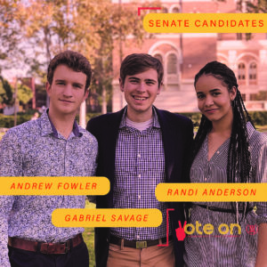
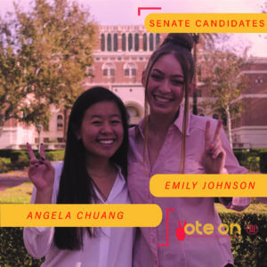

2019 UNDERGRADUATE STUDENT GOVERNMENT ELECTIONS
What issues matter to you?
Select what's important to you, and scroll down to view where the USG candidates stand.
More on this project:
We obtained the official platforms and photos of all the 2019 USG presidential and senatorial candidates. We categorized the platforms by issue to the best of our ability, as presented above.
Choose the issues that are important to you and related platform points will be displayed below, grouped by candidate.
If a candidate doesn't appear below, that candidate did not submit official stances on the selected issue.
Site built by Sarah Soutoul & Joe Calabrese
© 2019 USC Annenberg Media


